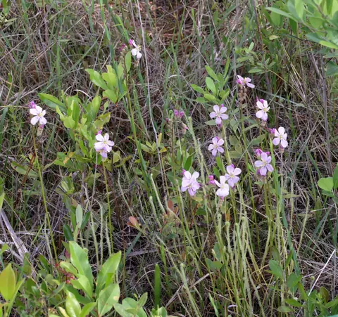
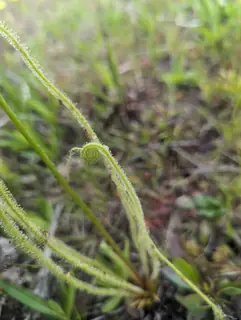

Drosera tracyi
Tracy's sundew



- Genus
- Drosera (sundews), family Droseraceae
- Subgenus
- Drosera
- Section
- Drosera
Original description
First described in 1906 as Drosera filiformis var. tracyi:
Drosera filiformis var. tracyi Diels, Pflanzenr. IV. 112(Heft 26): 92. 1906 [31 Jul 1906]
Given its current name and rank in 1914:
Drosera tracyi (Diels) Macfarl., Stand. Cycl. Hort. 2: 1077. 1914
Read the original page (Biodiversity Heritage Library) · IPNI record
Range given in the IPNI record of that publication: Florida to Mississippi, United States of America (Northern America).
How well the identifier knows it
Of 61 validation photos of Drosera tracyi (photos the model never trained on), its top guess was right for 60. It gave a confident answer for 53 of them, and 53 of those were right.
Trained on 167 photos of this species.
Most often mistaken for
- Drosera aquatica (1 photo)
Learn more
- iNaturalist: observations and range map
- Plants of the World Online (Kew): accepted name, distribution and synonyms